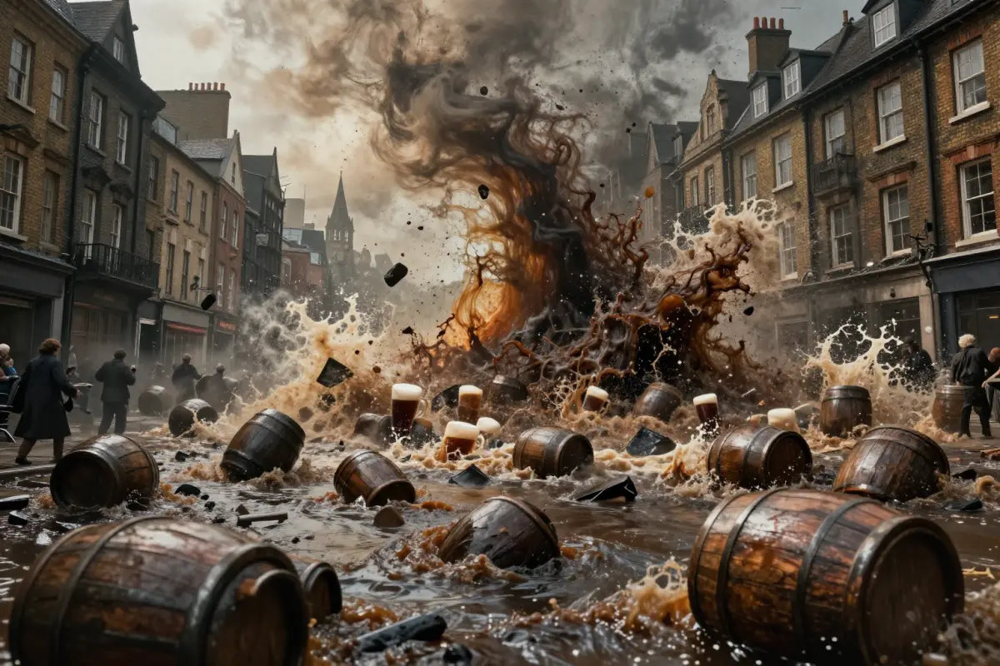

The London Beer Flood of 1814: A Wave of Destruction

A slipped hoop on a Monday
It is the afternoon of Monday, October 17, 1814, in London. At the Horse Shoe Brewery, a clerk named George Crick looks at a huge wooden vat. One of its iron hoops has slipped off.
Crick tells a supervisor. The supervisor says that no harm will come of it. About an hour later, the whole vat bursts.
What follows is one of the strangest disasters in the history of London. It is also a sad one, because eight people died. So let us tell it slowly and with care, and begin with the giants that stood inside the brewery.
Giants on Tottenham Court Road
The brewery belonged to Meux & Company. It stood where Tottenham Court Road meets Oxford Street. Sir Henry Meux bought it in 1809. He came from a rich brewing family, and his father, Sir Richard Meux, was one of London’s best-known brewers.
Beer was very important in those days. Many people thought it safer to drink than the city’s often dirty water. Men, women, and children drank it in huge amounts. The favorite kind was porter, a dark, rich ale made with brown malt.
So brewers built bigger and bigger vats. A vat is a big tank, and the brew ferments inside it. Fermentation is the process that turns the brew into beer. At the Horse Shoe Brewery, the vats were made of oak planks called staves. Heavy iron hoops held the staves together.
The biggest vat was 22 feet tall. On that day it held more than 3,500 barrels of porter. One account says that it could hold about 135,000 imperial gallons. That is enough to give a pint to more than one million people.
The brewery was proud of its giants. Visitors even paid to come and see them. But the work inside a vat is hard on the metal. The beer gives off carbon dioxide gas as it ferments, and the pressure is strong. Metal hoops can tire and crack under such strain.
Just outside the brewery walls, another London waited. It was a very different one.
The rookery next door
London was changing fast in 1814. The Industrial Revolution was at work, and more than one million people lived in the city. It was the largest city in Europe. It was also very crowded and very unequal.
Right behind the brewery lay the St. Giles rookery. A rookery was a crowded, very poor part of town. This one was a maze of narrow courts, dark alleys, and crumbling tenements. Its people were some of the poorest in London. They included Irish immigrants and many other poor families.
Whole families crammed into single rooms. Many lived in basements. These cellars were damp, had little fresh air, and could flood very easily.
The artist William Hogarth made this area famous in 1751. His print Gin Lane shows the horrors of addiction to cheap gin. Beer, by comparison, was seen as the healthy drink.
On that October afternoon, a great deal of beer was about to meet the cellars of St. Giles.
The black wave
The vat burst. The sudden release of so much porter made a blast of pressure. It knocked out the valve of the vat next to it, and that vat burst too. The beer then hit more vessels and barrels.
How much beer escaped? Sources disagree. The estimates run from 128,000 to 323,000 imperial gallons. The top figure is about 1.47 million liters. It would fill about half of an Olympic swimming pool.
This was not a slow leak. The force brought down the back wall of the brewery. Reports say that people heard a loud crash. A moment later, a black, foaming wave rushed into the lanes of St. Giles. In places it is said to have been 15 feet high.
The narrow alleys squeezed the flood and made it stronger. Side streets turned into rivers of beer, foam, and rubble. The cellars filled fast. Thousands of gallons of porter poured through broken windows and fallen walls. In minutes it rose to the ceilings.
Two houses on New Street were knocked down. The wave had done its worst. Now came the count of those who were lost.
Eight lives
Let us remember the people by name. The records give these names, though different sources spell some of them in different ways.
Eleanor Cooper was only 14 years old. She was a servant, and she was washing pots at the Tavistock Arms, a pub on Great Russell Street. A wall fell on her, and she died.
Two young children died in the houses on New Street. They were Hannah Bamfield, who was four years old, and Sarah Bates, who was three.
In another house, a family was holding a wake for a small boy. A wake is a gathering to remember someone who has died. The flood swept the mourners away. Records name Mary Mulvey, her young son Thomas Murry, Ann Saville, Elizabeth Smith, and Catherine Butler. Their ages are given as anything from three to sixty-five.
In total, eight people lost their lives. But the sad day was not over, and neither was the work of finding the living.
Digging by hand
The first hours were chaotic. Survivors told of wading through beer. It was mixed with broken timber, shattered glass, and the wreckage of fallen buildings. The smell of porter hung over the area for weeks.
London had no emergency services in 1814. So neighbors and bystanders did most of the rescue. They dug through the rubble with their bare hands. They looked for survivors in the fallen buildings and flooded cellars.
A few days later, a different kind of search began. It was not for people but for answers. Who was to blame?
Nobody to blame?
A coroner held an inquest in the days that followed. A coroner is an official who investigates sudden deaths, and an inquest is the hearing he holds. It heard from brewery workers, neighbors, and witnesses.
The question was simple. Was this an unavoidable accident, or was it the result of carelessness by the brewery’s managers? Remember the slipped hoop. The clerk had noticed it about an hour before the vat burst, and he had reported it.
Even so, the inquest ruled that the eight people died “casually, accidentally and by misfortune.” It found that the flood was an Act of God. That means an accident that nobody could have foreseen, so nobody could be blamed. As a result, no one was held responsible. The company paid nothing to the families.
The brewery itself lost a great deal. The disaster cost it about £23,000. That is roughly 1.25 million pounds in today’s money, by one estimate. Meux & Company asked Parliament for help. It got back about £7,250 of the excise duty that it had paid on the lost beer. Excise duty is a tax on goods like beer. This helped save the brewery from ruin.
Legends, and a quiet street corner
Later stories tell of a grim irony. They say that local people scooped up the spilled beer in pots, pans, and buckets. Some tales say that a man even died from drinking too much of it. But one historian points out that newspapers of the time did not mention any of this. So these stories may be legend.
The Horse Shoe Brewery went back into business soon afterward. It closed in 1921, when Meux moved its brewing to another site. It was torn down the following year. The Dominion Theatre on Tottenham Court Road now stands on the site. One source says that there is no plaque or memorial to the victims there.
So what do we know? We know the date, the place, and the names of those who died. We know that a hoop slipped and that somebody saw it. We do not know exactly how much beer escaped. And nobody can say whether anyone could have stopped it.
Today, people walk past that corner of Tottenham Court Road and Oxford Street without a thought. But on one Monday in 1814, a clerk looked at a hoop, and the street changed forever.
References & Further Reading
City AM: On this day in 1814, The London Beer Flood — Overview of the flood
Editorial note: The flood happened and eight people died. Sources disagree on how much beer escaped and on some names. Stories about crowds drinking the beer may be legend. See our Editorial Policy.